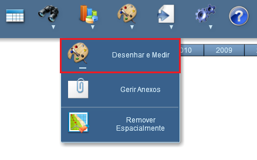
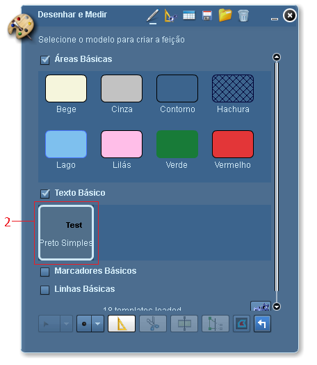

Adicionar Texto
Permite adicionar textos sobre o mapa.
Passos para adicionar texto:
1 - Clicar sobre o símbolo "Desenhar e Medir";

2 - Clicar sobre um dos itens da lista de "Texto Básico", como por exemplo, "Preto Simples";

3 - Clicar sobre o mapa no local aonde se deseja adicionar o texto;
4 - Digitar texto a ser apresentado.